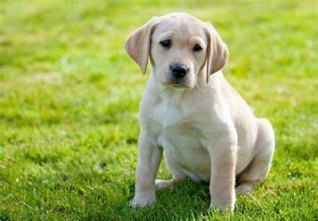
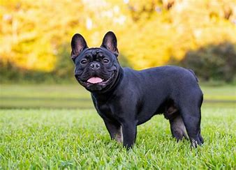

Форма авторизации
О собаках
Собаки — это верные и любящие друзья. Они бывают разных пород и характера. На нашем сайте вы найдете информацию о том, как выбрать породу, ухаживать за своим питомцем и обеспечить ему здоровую жизнь.
Популярные породы
- Лабрадор 
- Немецкая овчарка
- Французский бульдог 
- Йоркширский терьер
Собаки этих пород отличаются своими уникальными чертами. Лабрадоры славятся своим дружелюбием, овчарки — интеллектом, а французские бульдоги — компактностью и очаровательным внешним видом.